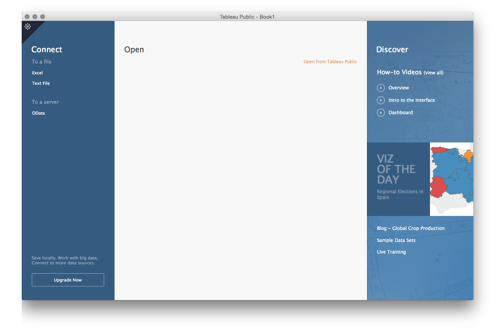
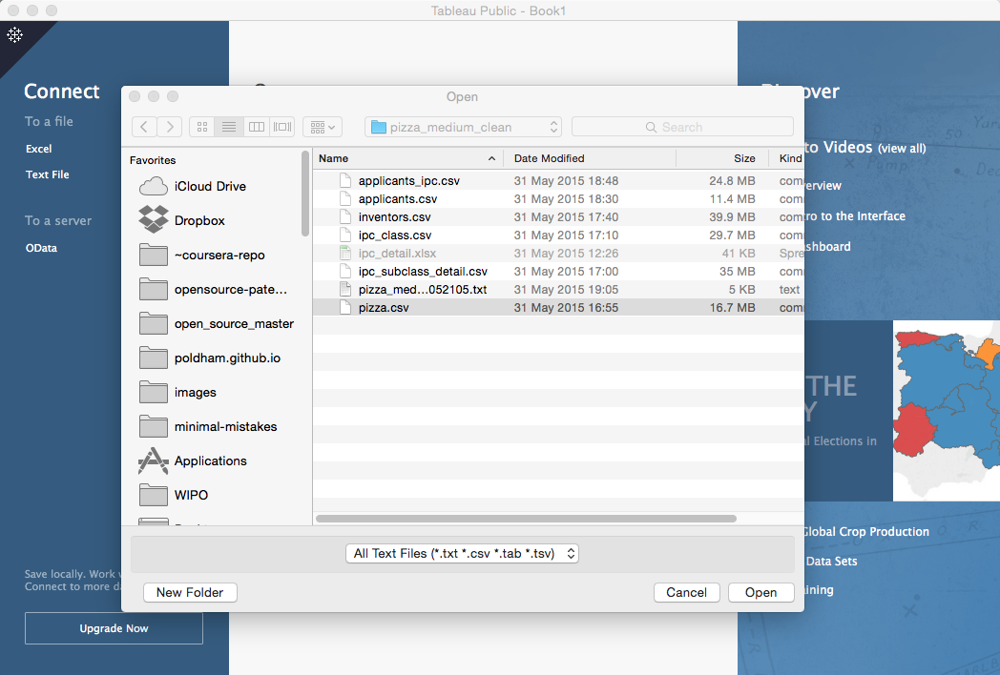
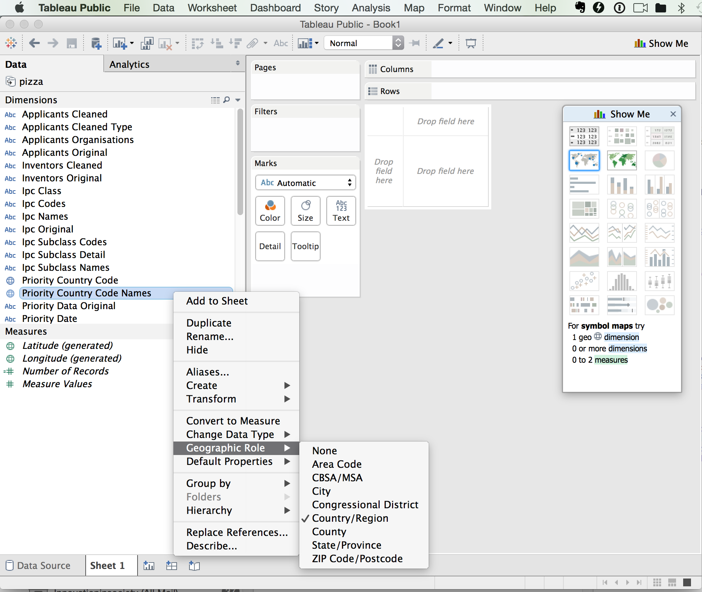
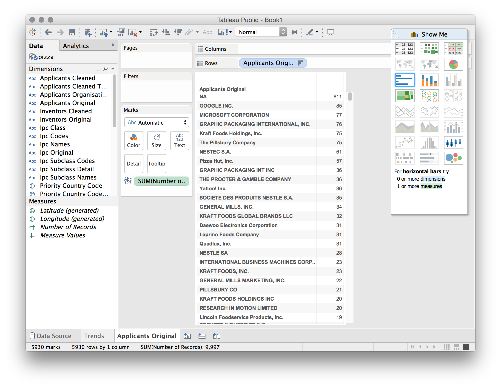
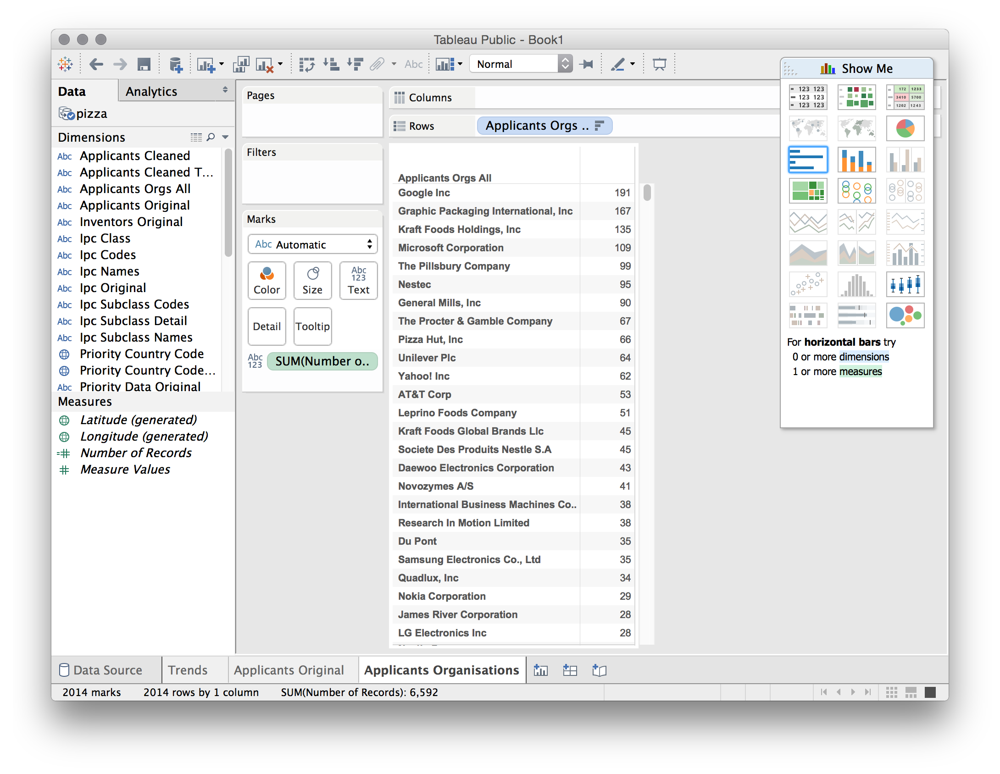
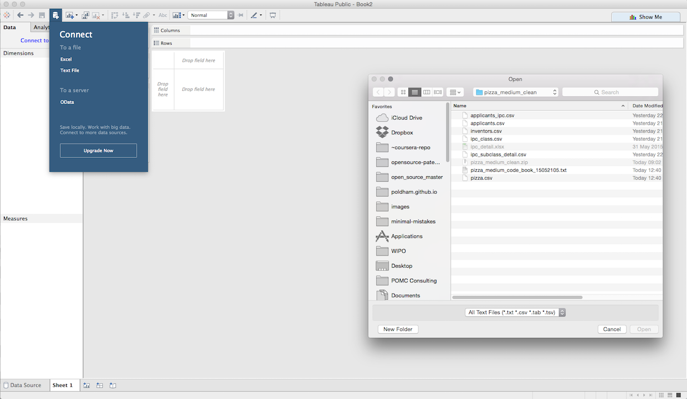
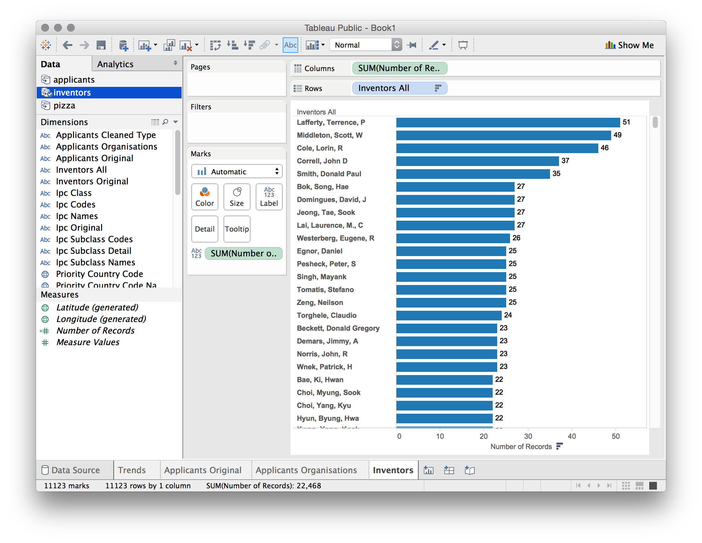
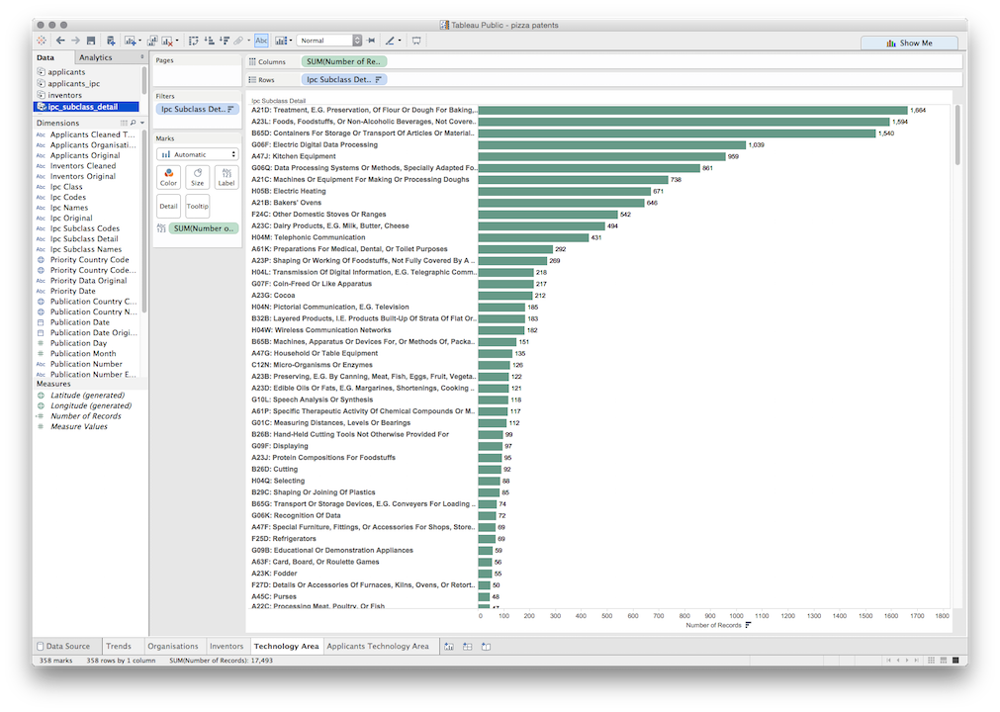
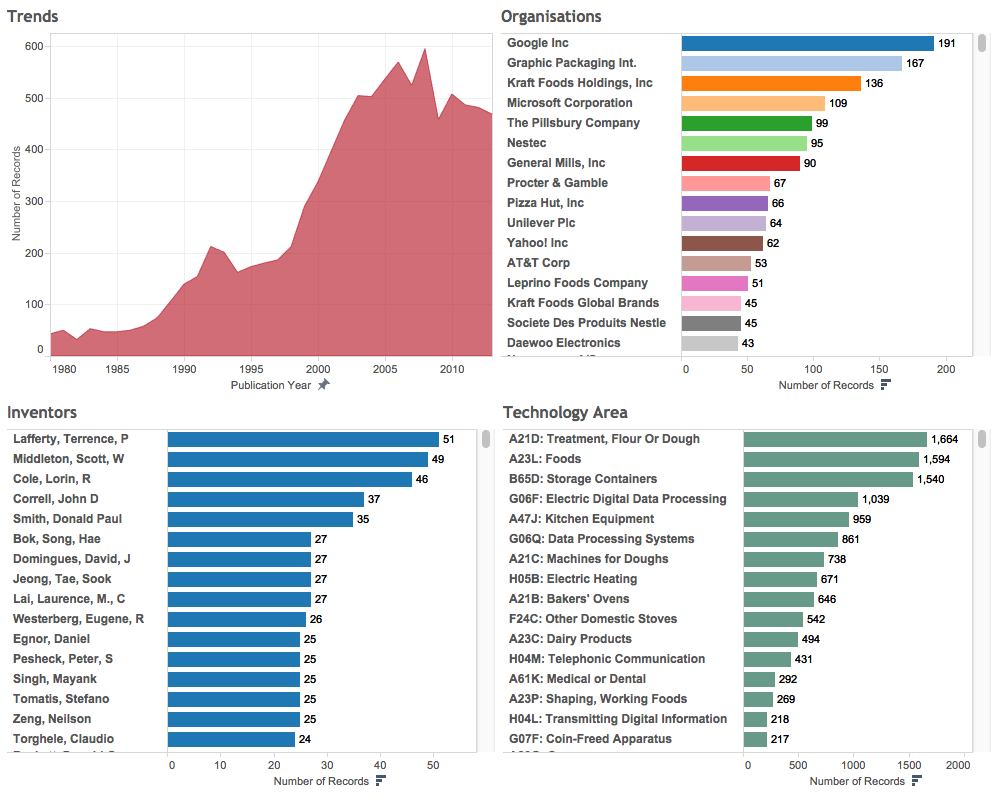

Chapter 9 Tableau Public
##Introduction
In this chapter we will be analysing and visualising patent data using Tableau Public.
Tableau Public is a free version of Tableau Desktop and provides a very good practical introduction to the use of patent data for analysis and visualisation. In many cases Tableau Public will represent the standard that other open source and free tools will need to meet.
This is a practical demonstration of the use of Tableau in patent analytics. We have created a set of cleaned patent data tables on pizza patents using a sample of 10,000 records from WIPO Patentscope that you can download as a .zip file from here to use during the walkthrough. Details of the cleaning process to reach this stage are provided in the codebook that can be viewed here. The Open Refine walkthrough can be used to generate cleaned files very similar to those used in this walkthrough using your own data. You will not need to clean any data using our training set files.
This article will take you through the main features of Tableau Public and the types of analysis and visualisation that can be performed using Tableau. In the process you will be creating something very similar to this workbook.
##Installing Tableau
Tableau can be installed for your operating system by visiting the Tableau Public website and entering your email address as in the image below.

While you are waiting for the app to download it is a good idea to select Sign In and then Create one now for Free to sign up for a Tableau Public Account that will allow you to load up your workbooks to the web and share them. We will deal with privacy issues in making workbooks public or private below but as its name suggests Tableau Public is not for sensitive commercial information.

This will lead you to an empty profile page.

While you are there you might want to check out the Gallery of other Tableau Public workbooks to get some ideas on what it is possible to achieve with Tableau. You may want to view a Tableau Workbook for scientific literature that accompanied this PLOS ONE article on synthetic biology. While it is now a few years old it gives an idea of the possibilities of Tableau and the feel of an existing profile page.

##Getting Started
When you first open the application you will see a blank page. Before we load some data, note the helpful How-to-Videos on the right and the link to a visualisation of the day. There are also quite a lot of training videos here and a very useful community forum. If you get stuck, or wonder how somebody produced a cool visualisation, this is the place to go.

To avoid staring at a blank page we now need to load some data. In Tableau Public this is limited to text or Excel files. To download the data as a single .zip file click here or visit the GitHub repository. unzip the file and you will see a collection of .csv files. The excel file and codebook should be ignored as supplementary.

As we can see above there are a number of files in this dataset. The core or reference file is pizza.csv. All other files are aspects of that file, such as applicants, inventors and international patent classification codes. That is concatenated fields in pizza have been separated out and cleaned up. One file, applicants_ipc is a child file of applicants that will allow us to access IPC information for individual applicants. This may not make a lot of sense at the moment but don’t worry it will shortly.
To get started we will select the pizza.csv file:

We will then see a new screen showing some of the data and the other files in the folder. At the bottom is a flag with Go to Worksheet, so let’s do that.

We will now see a screen that is divided in to Dimensions on the left, with Measures below. We can see that in the dimensions there are quite a large number of data fields. Note that Tableau will attempt to guess the type of data (for example numeric or date information is marked with #, geographic data is marked with a globe, text fields are marked with Abc). Note that Tableau does not always get this right and that it is possible to change a data type by selecting a field and right clicking as we can see below.

On the right hand side we can see a floating panel menu. This can be hidden as a menu bar by clicking the x. This panel displays the visualisation options that are available for the data field that we have selected. In this case two map options are available because Tableau has automatically recognised the country names as geographic information. Note that persuading Tableau to present the option that you want (for example visualising year on year data as a line graph) can involve changing the settings for the field until the option you want becomes available.
At the bottom of the screen we will see a worksheet number Sheet 1 and then options for adding three types of sheet:
- A New Worksheet
- A New Dashboard
- A New Story
For the moment we will focus on building worksheets with the data and then move into creating Dashboards and then Stories around our pizza data.
##Publication Trends
One of the first things we normally want to do with patent data is to map trends, either in first filings, publications or family members. In the case of our pizza patents from Patentscope we have a single member of a dossier of files linked to a particular application. This data is fine for demonstration needs and we can easily map trends for this data.
To do that we simply drag the publication year in the dimensions to the columns field and the number of records from the measures field. Note that Tableau automatically counts the number of rows in a set to create this field. If working with data where accurate counts are important it is important to make sure that the data has been deduplicated on the relevant field before starting. While it does not apply in this case, another important tip is to always have a way of checking key counts in Tableau such as using quick pivot tables in Excel or Open Office. We do not need to worry about this now, but while Tableau is clever software it is still software: it will not always perform calculations as you expect them. For that reason a cross check of counts is a sensible if not vital part of a Tableau workflow.
Tableau will guess what we are after and draw a graph.

As we can see we now have a graph that plunges off a cliff as we approach the present and contains one null. Null values are typically rows or columns containing blank cells. If there is only 1 null value then the data can probably be left as is (in this case it was a blank row at the bottom of the dataset introduced during cleaning in R). However, it pays to inspect nulls by right clicking on the file in Data and selecting View data. If there are large numbers of nulls then you may need to go back and inspect the data and ensure that blank cells are filled with NA values. Let’s go back to our graph.
What we see here is the data cliff that is common with patent data. That is, the cliff does not represent a radical decline in the use of the term pizza, it represents a radical decline in the availability of patent data the closer we move to the present day. The reason for this is that it generally, as a rough rule of thumb, takes about 24 months for an application to be published and can take longer for patent databases to catch up. As such, our data cliff reflects a lack of available data in recent years, not a lack of activity. Typically we need to pull back about 2 to 3 years to gain an impression of the trend.
Before we go any further and adjust the axis we will change the graph to something more attractive. To do that we will select filled graph in the floating panel. Behind that panel is a small colour button that will allow us to select a colour we like. The reason that we do this before adjusting the axis is that when we change the graphic type Tableau will revert any changes made to the axis.
Next we right click the x (lower) axis and adjust the time frame to something more sensible such as 1980 to 2013 by selecting the fixed option. As a very rough rule of thumb moving back two or three years from the present will take out the data cliff from the lack of published patent information. Note that if we were counting first filings (patent families) the decline would be earlier and much steeper. These lag effects, and ways to deal with them, have been investigated in detail by the OECD patent statistics team, see in particular work on nowcasting patent data.
We now have a good looking graph with a sensible axis. Note here that if we were graphing multiple trends on the same graph (family and family members) we might prefer a straightforward line graph for the sake of clarity.

We will give this a name Trends and add a new worksheet by clicking the icon next to our existing sheet.
The next piece of information we would like is who the most active applicants are. This will also start to expose issues about the different actors who use the term pizza in the patent system and encourage us to think about ways to drill down into the data to get more accurate information on technologies we might be interested, such as, in this case, pizza boxes and musical pizza boxes in particular.
It is at this point that the work we did in a previous article on separating individual applicant names into their own rows and cleaning them up using Open Refine, becomes important. In this dataset we have taken this a step further using VantagePoint to separate out individuals from organisations. This information is found in the Applicants Organisations field in the dataset. Lets just drop that onto the worksheet as a row and then add the number of records as a column (tip, simply drop it onto the sheet).
At first sight everything seems pretty good. But now we need to rank our applicants. To do that we select the small icon in the menu bar with a stacked bar pointing down.

We now see, as we would in the Excel raw file, that there are a significant number of blank entries for applicants in the underlying data, followed by 85 records for Google and 77 for Microsoft. This is also a very good indicator that there may be multiple uses of the word pizza in the patent system unless these software companies have started selling pizzas online.
In reality this is a partial view of activity by the applicants because elsewhere in the data the names are concatenated together. This is normally more obvious than in the present dataset through the presence of multiple names separated by ;(to see this scroll down to the first entry for Unilever).

To understand why this is a partial view we will now import the applicants.csv file. The correct way to do this is to select the menu called Data then New Data Source and the file applicants.csv.
Next, drag Applicants Orgs All onto the Rows. Note that Tableau is interpreting these titles for us (the original is applicants_orgs_all). Then drag Number of Records from the dimensions onto the sheet or into the columns entry. Now choose the stacked bar icon as above to rank the applicants by the number of records. We will now see the following.

Note the difference between the original applicants field (where Google scored a total of 85 records) and our separated and cleaned field where Google now scores 191 records. In short, before the separation and cleaning exercises we were only seeing 44% of activity in our dataset by Google involving the term pizza. This still does not mean that they have entered the online pizza business… . What it does tell us is that patent analysis that does not separate or split the concatenated data and clean up name variants is missing over 60% of the story when viewed in terms of applicant activity. As this makes clear, the gains from separating or splitting and cleaning data are huge even where, as in this case, the original data appeared to be quite ‘clean’. That appearance was deceptive.
Now we have a clearer view of what is happening with our applicants we can make this more attractive. To do that first select the blue bar in the floating panel. The worksheet will now be presented as ranked bars. Next, drag the number of records from Measures onto the Label button next to Color. That looks pretty good. If we wanted to go a step further we could now turn to the dimensions panel and drag Applicants Orgs All, onto the Color button. The bars will now turn to different colours for each applicant. If this is too bright simply grab the green Applicants Orgs All box from under the buttons menu and move it towards dimensions to remove it. Finally, if we want to adjust the right alignment of the text to the left, then first right click on the name of a company, pick Format then alignment and left. While the default is right align, in practice left align creates more readable labels. To change the default do this with the first worksheet you create before creating any others.
We now have an applicants data table that looks, depending on your aesthetic sensibilities, like this.

At this stage we might want to take a couple of actions. To make the labels more visible, drag the line between the names and the columns to the right. This will open up some space. Next, think about editing long names down to something short. For example, International Business Machines Corporation, who are also not famous for pizzas, is a little bit too long. Right click on the name and select Edit alias as in the image below.

Now edit the name to IBM. As a tip note that where you discover you have missed a duplicate name in clean up (remember that we focus on good enough rather than perfect in data cleaning) it is also possible to highlight two rows, right click, look for a filing clip icon and group two entries onto a new name. However, the resulting named group must be used in all later analysis. It is also important to realise that data cleaning is not a Tableau strength, Tableau is about data analysis and exploration through visualisation. For data cleaning use a tool such as Open Refine.
##Adding New Data Sources
We will follow the same procedure that we used for applicants to add the remaining files as data sources. We will add the following four files (as they appear in the folder in alphabetical order).
- applicants_ipc.csv
- inventors.csv
- ipc_class.csv
- ipc_subclass.detail.csv
To add the data sources either click the Data menu and New Data Source or (faster) the cylinder with a plus sign. Then select Text file, add each file and allow it to load.

If all goes well the Data panel will now contain the following files.

Note here that the applicants data displays a blue tick. This is because it was the last data source that we used and is therefore active. The fields we see in Dimensions belong to that data source. Next click in the bottom menu to create a new worksheet and then click inventors in the Data field. The field names will now change slightly. It is important to keep an eye on the data source that you are using because it is quite easy to drop a field from one data source onto another. In some cases this is a good thing. But, if you receive a warning message you will be attempting to drop a data source on to another data source where there is no matching field. We will come back to this on data blending.
Next follow the same procedure for ranking applicants with inventors using the Inventors All. For anyone interested in seeing the dramatic impacts of concatenated fields try dropping the Inventors Original field onto the worksheet.
Using Inventors All you should now see the following ranked list of inventors.

Now repeat this exercise for the remaining data sources by first creating a sheet and then selecting the data source. As you move through this select the following dimensions to add to the sheet and then drop number of
- applicants_ipc. Drop
Ipc Subclass Detailonto the sheet. Then drop number of records onto the sheet where the field says Abc. Note that a number6will appear in the first row. This is an artifact from the separation process. Select that cell, right click and then chooseExclude.
Do not rank this data, but instead drag the field Applicants Orgs All onto the sheet so that it is the first row (tip, it is easiest to do this by dragging the field into the row bar before the IPC field). You will now see a list of company names followed by a list of IPCs. Congratulations, we now have an idea of who is patenting in a particular area of technology using the word pizza at the level of individual applicants.
Add a new sheet. Then click on ipc_subclass_detail. Note that if you click on the data source first, the dimensions panel will go orange. Don’t panic. The reason is that Tableau thinks you are trying to blend data from the ipc_subclass_detail source with applicants_ipc. If you do this simply click on ipc_subclass-detail again.
- ipc_subclass-detail. Drop the
Ipc Subclass Detaildimension on to the sheet. Then drop the number of records onto the sheet. Then click on the first cell containing6as an artifact and exclude. Repeat for7. Then select the bar chart in the floatingShow Mepanel, then dragNumber of Recordsonto theLabelbutton. Now rank the column using the descending button in the upper menu as before.
At this point, if we had not trimmed the leading white space the ranked list would display indentations and there would be duplicates of the same IPC code. For that reason it is important to trim leading white space before attempting to visualise data (and this applies to all our separated fields).
##Creating an Overview Dashboard
You should now have five worksheets each of which displays aspects of our core pizza set. We have named the sheets as follows and suggest that you might want to do the same. Note that where there is more than one sheet containing similar but distinct information it will be helpful to give them distinct names (e.g. IPC Subclass and Applicants IPC Subclasses). We might even start using less technical labels by calling the IPC something clearer like Technology Area, to aid communication with non-IP specialists

Let’s get a quick overview of the data so far. Next to the add worksheet button in the worksheets bar is a second icon to create a dashboard. Click on that and we will now see a sheet called Dashboard 1.
Dashboards are perhaps Tableau’s best known feature and are rightly very popular. We can fill our dashboard by dragging the worksheets from the Dashboard side menu. The order in which we do this can make life easier or more difficult to adjust later. Let’s do it in the following steps
- Drag
Trendsonto the dashboard and it will now fill the view. - Drag
Organisationsonto the dashboard.

That is rather messy, but all is not lost. Simply click in the top right corner of the organisations panel on the right to remove it (in the original worksheet click on it and select Hide). We now have an Organisations column that still looks crunched.
Now select the top of the organisations box and a small inverted triangle will appear. Click on that and then choose Fit > Fit Width.

The bars may now disappear. Click into the box on the line where the bars start and drag them back into view. At this point long names may start to be obscured. If desired, right click on a long name such as Graphic Packaging International, choose Edit alias and edit it down to something sensible such as Graphic Packaging Int.
We now have two panels on the dashboard. Let’s add two more. First drag technology areas below the line where Trends and Organisations finish. Grey shaded boxes will appear that show the placement, across the width is fine. This can take some time to get right, when the whole of the bottom area is highlighted let go of the mouse. If it goes somewhere strange either select the box and in the top right press x to remove it, or try moving it (in our experience it is often easier to remove it and try again).
Do not try to format this box yet. Instead, grab inventors and drag it into the space before the technology areas below.
We now have four panels in the dashboard but they need some tidying up. First, in the two boxes we have just edited repeat the Fit Width exercise and then drag the line for the bars around until they are in view and satisfactory. Next, we have names such as Applicants Orgs All that are our internal reference names. Click on them in each of the three panels one at a time and select Hide Field Labels for Rows.
Hmm… our Technology Areas panel is proving troublesome because even the edited version of the IPC is rather long.
Before we do any editing, first experiment with the Size menu in the bottom right. The default dashboard size in Tableau Public is actually quite small. Change the settings until you have something that looks cleaner even if there are still some overlaps. Options such as Desktop, Laptop and Large blog are generally decent sizes but in part the decision depends on where you believe it will be displayed.
To fix the long Technology areas labels we go back to the original sheet (tip: if you move the mouse to the top right in the panel an arrow with Go to Sheet will appear, it is very useful for large workbooks). Inside the original sheet, try dragging the line separating the text and bars so that the bars now cover some of the longer text. Then switch back to the dashboard. If you feel unhappy with the result then right click in the panel in the dashboard and then choose Edit alias. This is useful for simply making labels in the view more visible (it does not change the original data).
If all goes well you will now have a dashboard that looks more or less like this. Note that depending on the worksheet settings you may want to make the font size consistent (right click and choose Format, then font size). Note also that if you increase the font size (the default is 8 point) then you may need to edit some of the labels again.

We have now done quite a lot of work and produced an Overview dashboard. It is time to save the workbook to the server before doing anything else.
##Saving, Display and Privacy Settings
The only option for saving a Tableau Public workbook is to save it online. To save the file go to File and Save to Tableau Public. If you want to save the workbook as a new file (after previously saving) then choose Save As.

You will then be asked to enter your username and password (Tableau does not remember the password) and the file will upload. Tableau will then compress the data. As of June 2015 it is possible to store 10GB of data overall and to have up to 10 million rows in a workbook (which is generally more than enough).
Tableau will then open a web browser at your profile page and it will look a lot like this.

Having read the message, click Got it on the right. Do you notice anything strange. Yes, we can only see the Dashboard and not any of the other sheets. To change this and any other details click on edit details near the title and some menus will open up as follows.

To make sure the worksheets are visible select the check box marked Show workbook sheets as tabs and then Save.
To access this demonstration workbook go here.
##Privacy and Security
As emphasised above, Tableau Public is by definition a place for publicly sharing workbooks and visualisations. It is not for sensitive data. In the past users, such as journalists, relied on what might be called ‘security by obscurity’ but the trend towards storing data on a Tableau public profile (the only option) makes that less of an option. If this a concern there are two actions that might potentially be considered that limit the visibility of a workbook and its wider use. Logically, the answer to any concerns about Tableau Public and sensitive information is not to include sensitive information in the first place. The following are not recommendations but simply highlight the available options.
- In the discussion on the settings above, there is a check box to prevent users from downloading a workbook. You might want to select that option where a workbook contains information that you do not want to be seen other than what you choose to make visible.
- It is possible to create a setting so that a workbook does not show up on a user’s profile. This is hard to spot, and appears by hovering over the workbook in the Profile view.

As the message points out using this option does not prevent a workbook being found through search engines or seen by users. It just means it is not visible on the profile page.
As such, Tableau public is fundamentally about sharing information with others through visualisation. That is, it is for information that you want others to see. Here it is briefly worth returning to the completed dashboard above and clicking the share button.

As we can see here, Tableau generates embed codes for use on websites or for emailing as a link along with twitter and facebook.
##Round Up
In this chapter we have introduced the visualisation of patent data using a set of nearly 10,000 patent documents from WIPO Patentscope that mention pizza. As should by now be clear Tableau Public is a very powerful free tool for data visualisation. It requires attention to detail and care in construction but is one of the best free tools that is out there for visualisation and dashboarding.
To take working with Tableau on pizza patents forward on your own here are some tips.
- You already know how to use Tableau to create a map of publication countries.
- The pizza source file contains a set of publication numbers. Try a) creating a visualisation with the publication numbers, b) looking in the pizza source file for a set of URL and then exploring what can be done with
Worksheet > Actionwith that URL. - In dashboards consider using one field as a filter for another field (such as applicant and title). What data source or data sources would you need to do that?
- What kinds of stories does the pizza data tell us and how might we visualise them using the information provided on applicants and its subset Applicants IPCs?
If you get stuck, and it does take time to become familiar with Tableau’s potential, perhaps try exploring this workbook on synthetic biology and the use of Tableau images in this article PLOS ONE article. As a tip, try clicking on the bars and then the titles to understand Actions. Downloading workbooks prepared by others can be a very good way of learning the tips and tricks of tableau visualisation and dashboarding.
If you would like to download the pizza workbook it is here.
However, one of the most important issues exposed by working with Tableau is that you must ensure that fields you want to visualise are tidy, that is not concatenated, and also that they are as clean as it is reasonable to make them. For researchers wishing to work up their own data we suggest the Open Refine article as a good starting point.